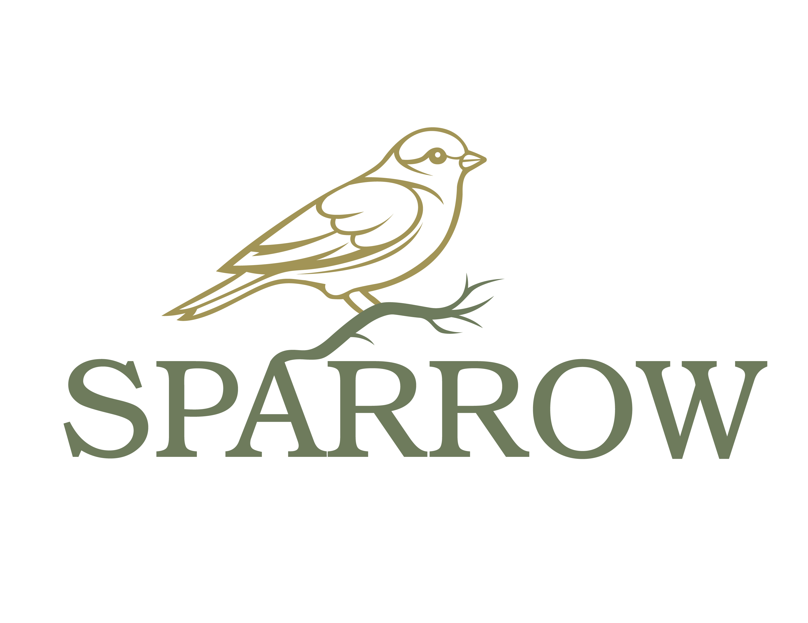

SPARROW
Jr.
Seek · Open · Act · Respond
A children's faith companion that grows with you
and meets you in Scripture, reflection, action, and prayer.
Who is reading today?
SPARROW Jr. by Inscribe4u · No accounts · No data collected from minors